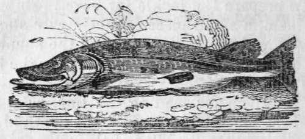

A Description Of A Pike
Description
This section is from the book "The Art Of Angling Greatly Improved", by An Unknown Author. Also available from Amazon: The Art of Angling Greatly Improved.
A Description Of A Pike
The Pike is a hold voracious fish, and may he fished for during the whole of the year, but the most favourable months are September and October. His general resort is near flags, bulrushes, and water-docks. As the season grows colder he retires into the deeps, and is to be found under clay banks and bushes that hang over the water, stumps and roots of trees, and piles of bridges. There are five methods of catching Pike, two of which belong only to the angler, the remainder to the poacher; the former are by trolling and snapping. In trolling the rod ought to be fourteen feet long, with rings for the running-line ; the line should be at least thirty yards long, of either silk or hemp. The best baits are Gudgeons and Dace, of a middling size ; but in default of these, Roach, Bleak, small Trout, or Salmon fry. In order to bait (he hook, the fish-needle must be put in at the mouth of the bait, and out at the middle of the tail, drawing the gimp and hook after it, fixing the point of the hook near the eya.
Drop the bait in near the river-side, where it is moderately deep, and where Pike are likely at that season to resort; let it sink to the bottom, and draw it gently up, imitating in the motion a fish hurt or dying ; after trying two or three times to the right and to the left, throw the bait further in. When a Pike seizes the bait, it will be easily perceived by the line being drawn tight, and some resistance being displayed; give him more line, and let him go whither he will, until he has reached his harbour, which will be known by his not drawing any more line; I3.J down the rod, and give him more time to gorge the bait, which he will generally do in five minutes; then draw the line gently till the fish be seen; if the bait be seen across his mouth give him more time, but if he has gorged the bait, govern him with a gentle hand, keeping him from roots and stumps. He must not by any means be lifted out of the water with the rod and line only ; for although, to all appearance, the fish may be tired, yet the moment he quits the water, he will open his mouth, and, by tearing his stomach with his own weight, get quit of the hook, and the fish will not only be lost, but he will die in the water.
The method of fishing with a live bait, or what is called the live-snap, is very different from trolling. The line and red must he stronger, and the hooks much larger. They consist of two hooks joined back to back, with a smaller hook in the middle of their shanks; the bait is hooked by the small hook, just under the back fin, the point and beard coming out on the other side, and is fastened by a strong thread or silk doubled.
Roach, Dace, or Gudgeons are the best baits; a cork float will be necessary about the size of a common Burgundy pear, with a small pistol bullet or two, not only to poise it, but to keep the bait at a proper depth.
As a live bait many anglers prefer the Perch, it being the longest lived on the hook, first cutting off the fin on his back. The frog is the next good bait for Pike, but particular care must be taken to select the water frog, which breeds in ditches, and choose the yellowest, which the Pike likes best. All other frogs are considered venomous. The following method should be adopted to keep the frog alive on the hook as long as possible : Put the hook through his mouth, that is, pass the arming-wire into his mouth and out at the gills; with a fine needle and silk sew the upper part of his leg with a single stitch to the arming-wire of the hook, or tie the frog's leg above the upper joint to the arming-wire. This will be found an excellent bait as a leiger bait.
Continue to: